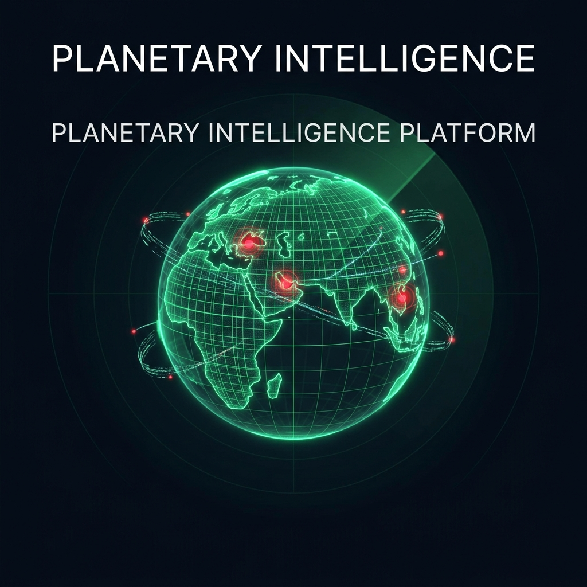
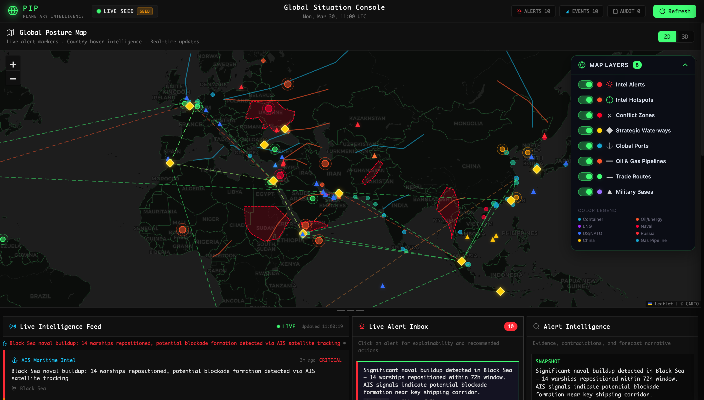
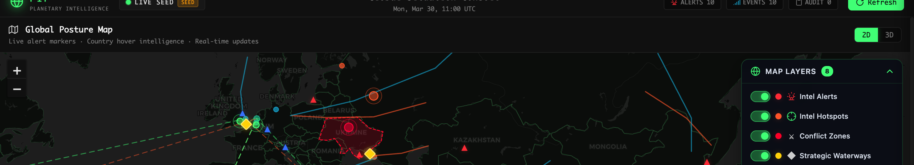
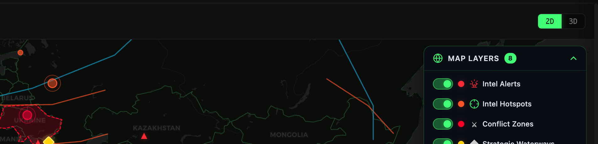
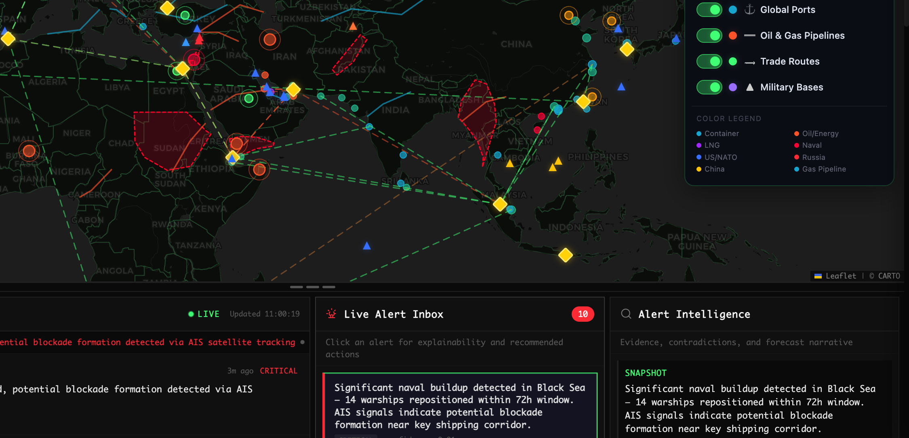
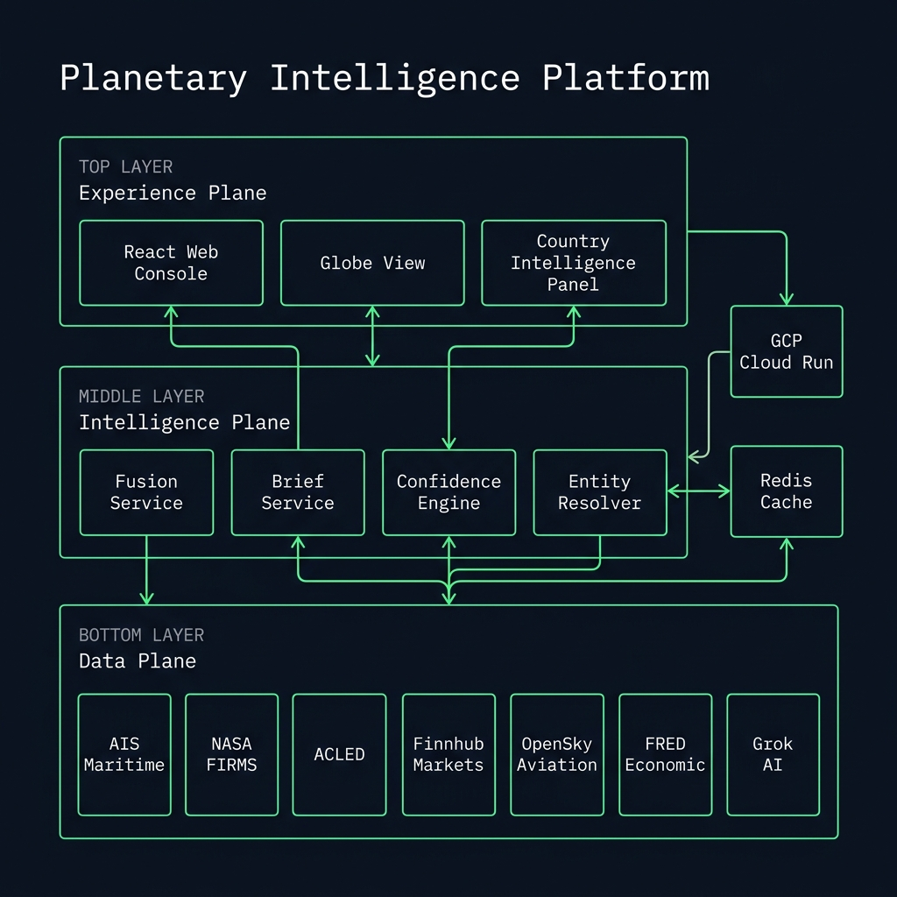

"The world does not have a data shortage. It has a decision shortage."
Presentation Goal
Show that PIP is not just a dashboard. It is a full signal-to-decision pipeline that ingests fragmented
global signals, turns them into explainable intelligence, and models downstream consequences.
Open with the decision shortage line, pause, then say: "We built Planetary Intelligence Platform to close the gap
between raw global signals and confident decisions."
What breaks without PIP
- Slow context assembly: teams jump between feeds before they can form a coherent picture.
- Weak explainability: many systems show events, but not why they matter or what happens next.
- Poor consequence modeling: disruptions at chokepoints rarely get translated into downstream sector effects.
- Operator overload: too many raw headlines, not enough structured intelligence.
What PIP changes
- Unifies signals into one common intelligence model.
- Scores confidence using corroboration, freshness, and fusion context.
- Explains outputs with evidence, forecast, and uncertainty.
- Projects impact through a cascade graph of chokepoints, commodities, sectors, and countries.
Keep this slide human and simple. Judges should leave this slide thinking: "Yes, this solves a real analyst pain."

Real project screenshot from the repository showing the global posture map, live feed, alert inbox, and alert intelligence panel.
What to point out live
- Global Posture Map: real-time surface for alerts, hotspots, conflict zones, ports, waterways, routes, and bases.
- Live Intelligence Feed: where heterogeneous upstream signals arrive as operator-readable alerts.
- Live Alert Inbox: a triage queue so analysts can pick the most important event quickly.
- Alert Intelligence: where the platform explains the event with snapshot, drivers, contradictions, forecast, and confidence.
Best line for judges: "This is the operational surface of a larger intelligence pipeline, not the pipeline itself."
Spend time here. This is the first moment judges can visualize the product. Walk left to right across the screen.

Strategic geospatial context: conflict zones, routes, chokepoints, ports, and hotspots.

Layer control shows that this is a configurable intelligence surface, not a static image.

The analyst flow goes from trigger to triage to structured explanation.
What makes the UI impressive
- Real-time map overlays give geographic context to every alert.
- Operators can move from detection to explanation without leaving the console.
- The layout supports both rapid scanning and deeper investigation.
- It feels like a command environment, not a generic admin dashboard.
Use the words "command environment" and "operator workflow." Those phrases make the interface sound intentional and serious.

Repo note: this architecture image is an early visual asset. For the current codebase, describe the system as
a four-plane architecture: Data, Intelligence, Experience, and Control.
Judge-friendly architecture story
- Data Plane: ingests live signals from multiple domains and normalizes them into one canonical event model.
- Intelligence Plane: resolves entities, fuses related events, calibrates confidence, and builds briefs.
- Experience Plane: exposes the map, feed, alerts, cascade view, and analyst-facing workflows.
- Control Plane: handles policy, access control, tenant isolation, and governance.
Strong line: "Architecturally, this is an end-to-end signal-to-decision system, not just a frontend."
Be explicit that the architecture image is illustrative, while your spoken explanation reflects the current codebase.
What judges should hear
- Explainable: every alert is structured with snapshot, drivers, contradictions, forecast, evidence, and uncertainty.
- Confidence-scored: confidence is calibrated from base confidence, source reliability, corroboration, fusion size, and freshness.
- Auditable: the reasoning path is visible enough for a human analyst to challenge or trust the output.
CorroborationMore confirming sources raise confidence.
FreshnessRecent events keep higher confidence than stale ones.
FusionLarger event clusters contribute additional confidence.
UncertaintyEach output still exposes what remains unclear.
Use this visual while saying: "The system shows not only the alert, but the reasons behind the alert."
Say this carefully: "Our confidence score is calibrated, not decorative." That line usually lands well with technical judges.
Present this alongside a live example like Hormuz, Red Sea, or Taiwan Strait and explain how the initial trigger becomes downstream impacts.
How to explain cascade simply
- Step 1: map the alert into graph-backed nodes like Strait of Hormuz, Crude Oil, or Semiconductors.
- Step 2: propagate risk through weighted dependencies using controlled decay.
- Step 3: convert graph hits into useful operator language such as higher freight, refinery stress, importer exposure, or food-price pressure.
Best spoken example
"If the Strait of Hormuz closes, PIP does not stop at flagging the headline. It projects likely early effects on crude,
LNG, war-risk insurance, and energy supply chains, then shows who is exposed next, such as India, Japan, South Korea, and China."
This is the slide where judges should think: "This team is doing something deeper than event visualization."
Fail-softThe experience layer supports live, mixed, and fallback modes instead of going blank.
Evidence-gatedCascade only runs on graph-backed disruption signals, not vague headline guessing.
GovernedRole-based access and tenant isolation make the platform closer to real operational software.
ExplainableEvery important output is paired with reasoning, not just a score.
What to say
"We intentionally optimized first for transparency and operator trust. Even where the system uses heuristic priors,
those choices are visible and calibratable rather than hidden inside a black box."
Strong closing angle
PIP is valuable because it helps humans move from raw information to structured judgment faster, with more context
and better downstream awareness.
Use this slide to demonstrate maturity: "We are honest about heuristics, deliberate about guardrails, and focused on decision usefulness."
30-second close
Planetary Intelligence Platform unifies fragmented global signals into explainable, confidence-scored intelligence
and projects downstream consequences through cascade modeling. The outcome is faster situational awareness and better decision support.
If judges ask for the core innovation
- Multi-source signal fusion
- Explainable alert intelligence
- Confidence calibration
- Graph-based second-order impact modeling
End with confidence and stop. Do not over-explain after the closing line. Let the judges come to you with questions.